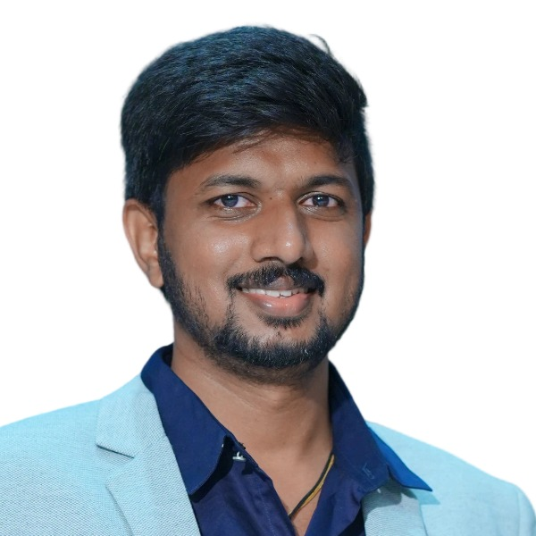

Cloud Automation Platform
Terraform • AWSBuilt reusable infrastructure and automation patterns to create scalable, repeatable cloud environments with less manual setup and better operational consistency.
I am Kankatala Venkata Praveen, a Cloud, DevOps, Automation, Platform and Site Reliability Engineer who enjoys turning complex infrastructure and operational problems into simple, scalable, and reliable solutions. I work across cloud platforms, automation, CI/CD, containers, observability, and platform operations to help teams ship faster and run systems with confidence.
AWS Certified Solutions Architect – Associate • AWS Certified Cloud Practitioner • Microsoft Azure Fundamentals
Deployment lead time reduced
Manual service work removed
Patching cycle improvement

I enjoy building platforms that make engineering teams more productive. My work is centered around cloud infrastructure, deployment automation, operational reliability, and the tools that help teams ship better software with less manual effort.
I design and support cloud infrastructure, automate repetitive engineering tasks, improve CI/CD pipelines, and build dependable DevOps workflows that reduce manual work and improve delivery speed.
My approach is practical and hands-on. I focus on maintainable automation, clear deployment processes, clean integrations, and strong monitoring so systems are easier to manage in real environments.
Tools and platforms I use across cloud engineering, automation, DevOps, code quality, deployment, monitoring, and platform operations.
Included locally in this ZIP so the portfolio works as a self-contained S3 static website.
Cloud infrastructure and services
Cloud platform and enterprise integration
Infrastructure as code and automation
Containerized packaging and deployment
Container orchestration at scale
Automation and configuration management
Enterprise automation workflows
Build and delivery pipelines
Code quality and continuous inspection
Metrics collection and monitoring
Dashboards and observability

Automated CI/CD workflows

GitOps delivery and sync
Source control and team collaboration
System administration and operations
A few highlights from my hands-on work across cloud delivery, automation, DevOps enablement, platform operations, and production support.
These project cards are written in a practical, recruiter-friendly style and can be replaced later with exact public case studies, architecture diagrams, or repository links.
Built reusable infrastructure and automation patterns to create scalable, repeatable cloud environments with less manual setup and better operational consistency.
Improved delivery pipelines with better automation, build quality checks, and deployment workflows that helped teams release faster and with more confidence.
Created automation workflows for patching, user lifecycle tasks, and service operations to reduce manual effort and improve support responsiveness.
Certifications that reflect my hands-on foundation in cloud architecture, DevOps, automation, and platform engineering.
Successfully earned this certification, demonstrating my knowledge of AWS architecture, scalability, availability, networking, and security best practices.
Built a strong foundation in AWS services, pricing, security, and cloud concepts that support real-world cloud and DevOps work.
Validates my understanding of Azure services, governance, pricing, and core cloud concepts across enterprise environments.
Open to Cloud, DevOps, Automation Engineer, Platform Engineer, and Site Reliability Engineering opportunities.
If you are hiring or want to discuss Cloud, DevOps, Automation Engineering, Platform Engineering, or Site Reliability Engineering work, feel free to contact me.